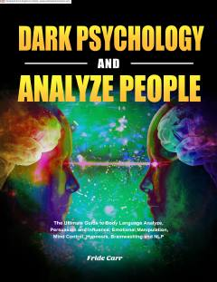

QPQorongʻu psixologiya, manipulyatsiya va tana tilini tahlil qilish boʻyicha amaliy qoʻllanma.
Ushbu kitob qorongʻu psixologiya tamoyillari, hissiy manipulyatsiya va odamlarni tahlil qilish usullarini tushuntirib beradi. Muallif gipnoz, miya yuvish va neyro-lingvistik dasturlash kabi vositalarning qanday ishlashini hamda ulardan himoyalanish yoʻllarini yoritib beradi.